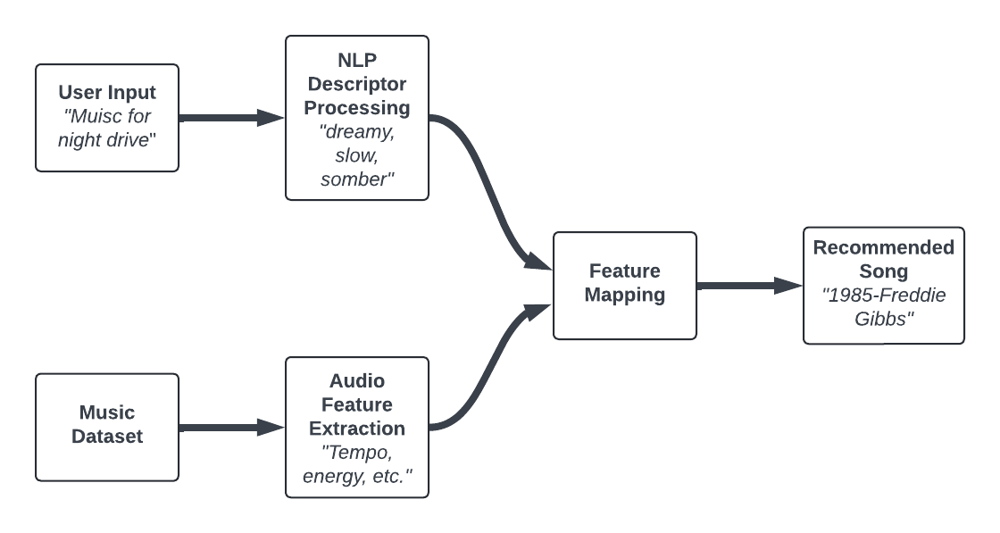

Abstract
We wanted to create a novel application that would recommend songs and music playlists based on user prompts. While Spotify came out with a similar feature recently, we wanted to create an application that more readily understands the user prompt. We used MU-LLaMA to decipher the music audio in our datasets and create natural language prompts from that. We then used the Gemini API to decipher the prompts and recommend songs and playlists based on that. We do not have results yet.

Introduction / Background / Motivation
What we are trying to do
We want to create an application that would recommend songs and music playlists based on user prompts, wanting to create a more personalized and tailored experience for the user. We also wanted to discover what kind of music our application thought very abstract prompts would sound like. For example, what would a song sound like if it was based on the prompt "a song that sounds like a sunset"? Our goal is to create something that is not affected by the user's listening history, and is more based on the prompt itself, while being able to handle more abstract prompts and hopefully return sensible songs.
How is it done today, and what are the limits of current practice?
Spotify has a new feature that recommends songs and playlists based on user listening history and song titles. However, the recommendations that Spotify gives are not very in-depth, and a lot of the recommendations are based on the user's listening history and song titles. Becuase of this, the songs they provide are not going to "catch the vibe" as it where, of the prompt given if the prompt is too abstract. There have also been plenty of studies looking into music recommendation systems, but there are still a few gaps in the research. For one, there is not much work on handeling conext based prompts, and the integration of lyrical sentiment analysis with audio feature analysis has not been fully explored.
Obviously, with very abstract prompts it is extremely hard if not impossible to say whether or not a song is a good recommendation. Thus, there is a limit as to what can be expected from a music recommendation system. Furthermore, music is a very subjective media, and because of this people will not like the songs that are recommended to them, while others may. It seems highly unlikely that we will se a music recommendation system that can perfectly predict what a user will like and wants in our lifetime.
Why should you care?
If we succeed, we will have created a music recommendation system that can handle more abstract prompts and return sensible songs. This could help people discover new music that they would not have found otherwise, and help people create playlists for momements in their life with more ease. Our application will be able to capture more complex and metaphorical ideas than current music recommendation systems, and thus be able to recommend songs that are more in line with the user's intent. This will open up new possibilities for how people listen to music, allowing unfamiliar songs and artists to be discovered based on emotions and environment rather than just listening history.
Approach
What did you do exactly? How did you solve the problem? Why did you think it would be successful? Is anything new in your approach?
Our application was created with a simple enough pipline in mind. First, we take the prompt given by the user and use a model to derive musical qualities and descriptors from it. Then we take the parsed descriptors and map them onto both audio a lyrical data using a seperate model which extracts similar qualities and descriptors from the music dataset. We thought this would be successful as integrating both lyrical and audio features would give us a more complete picture of the music, and thus a better recommendation. As for handeling abstract prompts, by parsing natural language into musical features, our application will be able to more readily understand the intent of the prompt.
What problems did you anticipate? What problems did you encounter? Did the very first thing you tried work?
TBD
Results
How did you measure success? What experiments were used? What were the results, both quantitative and qualitative? Did you succeed? Did you fail? Why?
TBD
| Experiment | 1 | 2 | 3 |
|---|---|---|---|
| Sentence | Example 1 | Example 2 | Example 3 |
| Errors | error A, error B, error C | error C | error B |

Conclusion and Future Work
TBD - want to wait until we have a working applicaiton